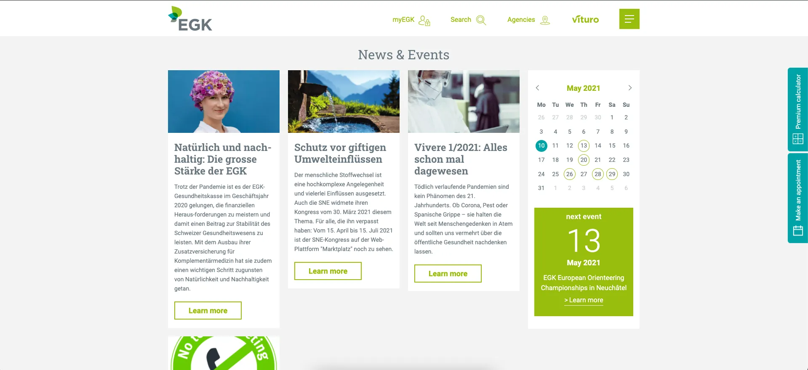
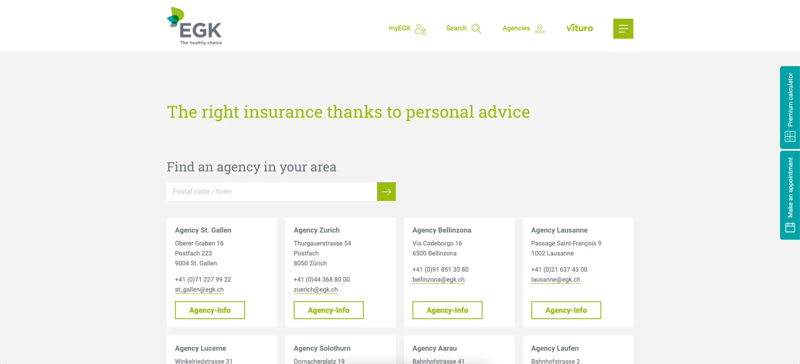
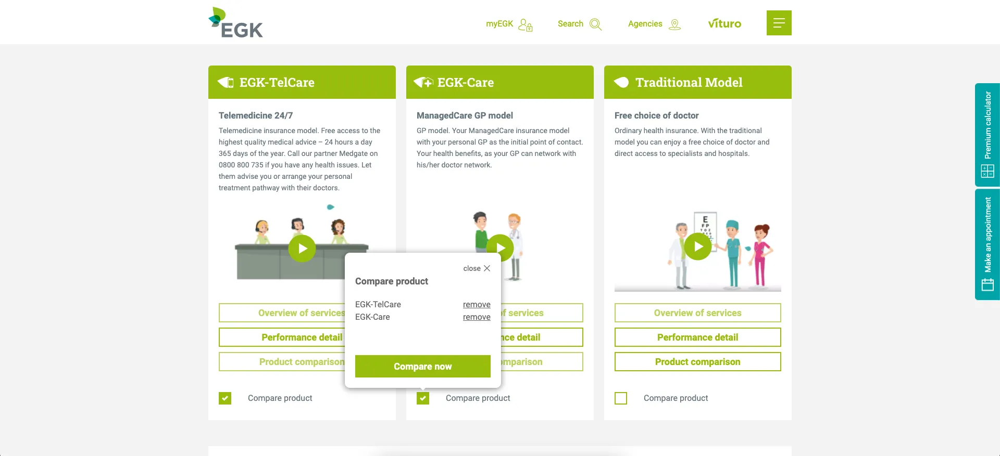
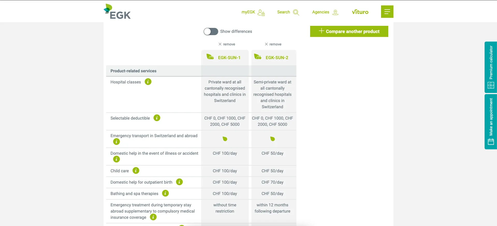
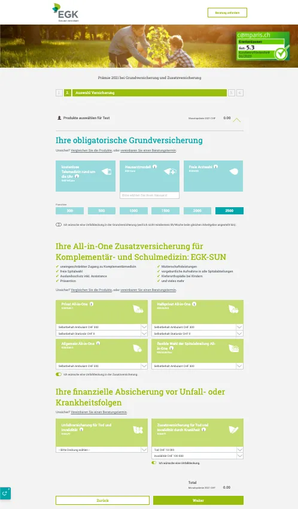
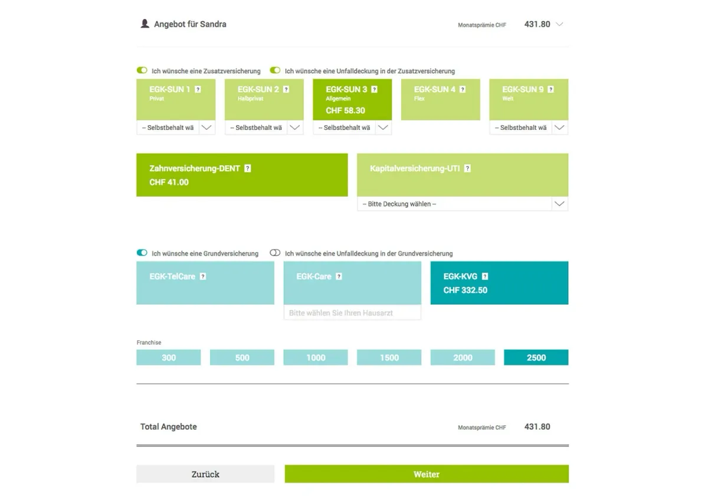

Originally, the main website and the premium calculator were created with SilverStripe. In 2018, we began transitioning to a new CMS, Pimcore, starting with the main page and planning to follow with the calculator.
Before selecting a partner and CMS, my team and I gathered requirements through meetings, user research, and workshops. We identified a need for comparing insurance products, determining agency responsibilities by geography, and using videos for clearer product explanations.
My role involved compiling functional and non-functional requirements, analyzing the existing website and customer needs, prototyping ideas, and organizing workshops.
Now, as the product owner of both the calculator and main website, I’ve advocated for user research, leading to interviews and usability tests that have improved our products. One card sorting workshop resulted in a complete overhaul of the website’s information architecture, making it much easier for customers to navigate.





Since only the main website got moved to another CMS so far and the premium calculator stayed, my task was to optimize this calculator without generating a lot of work. This because the calculator will be transferred soon as well.
Some key take aways from the user research (usability tests & interviews)
- basic insurance before additional insurance
- color separation unclear
- info blocks had to be improved
- benefits of additional insurance unclear
- mobile use was difficult
Further adaptions
- reusing product icons from the app and home page
- added links for booking an appointment or to get in touch
- forms simplified
- added hover effects for unselecting products
- further design adaptions
These adaptions were enough to increase user retention by 15% on the premium calculator.
Before

After
